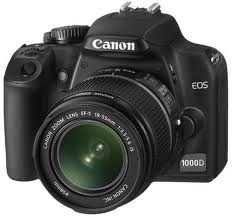
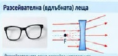

<!DOCTYPE html>
<html lang="bg">
<head>
    <meta charset="UTF-8">
    <meta name="viewport" content="width=device-width, initial-scale=1.0">
    <title>Физика - Тестове и Ключове</title>
    <style>
        * {
            margin: 0;
            padding: 0;
            box-sizing: border-box;
        }

        body {
            font-family: 'Segoe UI', Tahoma, Geneva, Verdana, sans-serif;
            background-color: #f5f5f5;
            line-height: 1.6;
        }

        .container {
            display: grid;
            grid-template-columns: 200px 1fr 200px;
            min-height: 100vh;
            max-width: 1400px;
            margin: 0 auto;
        }

        /* Странични полета с градиент */
        .sidebar-left, .sidebar-right {
            background: linear-gradient(180deg, #808080 0%, #ffffff 100%);
            padding: 20px 10px;
            position: sticky;
            top: 0;
            height: 100vh;
            overflow-y: auto;
        }

        .sidebar-left {
            border-right: 2px solid #ddd;
        }

        .sidebar-right {
            border-left: 2px solid #ddd;
        }

        /* Галерия с изображения в лявото поле */
        .image-gallery {
            display: flex;
            flex-direction: column;
            gap: 10px;
        }

        .image-gallery img {
            width: 100%;
            max-width: 130px;
            height: 130px;
            object-fit: cover;
            border: 2px solid #666;
            border-radius: 8px;
            box-shadow: 0 2px 5px rgba(0,0,0,0.3);
            transition: transform 0.3s ease;
        }

        .image-gallery img:hover {
            transform: scale(1.05);
        }

        /* Основно съдържание */
        .main-content {
            background-color: #ffffff;
            padding: 30px;
            box-shadow: 0 0 10px rgba(0,0,0,0.1);
        }

        .header {
            text-align: center;
            margin-bottom: 30px;
            padding-bottom: 20px;
            border-bottom: 3px solid #4CAF50;
        }

        .header h1 {
            color: #2c3e50;
            font-size: 2.5em;
            margin-bottom: 10px;
            text-shadow: 2px 2px 4px rgba(0,0,0,0.1);
        }

        .navigation {
            text-align: center;
            margin-bottom: 30px;
            padding: 15px;
            background: linear-gradient(45deg, #e3f2fd, #f3e5f5);
            border-radius: 10px;
        }

        .navigation a {
            color: #1976d2;
            text-decoration: none;
            margin: 0 10px;
            padding: 8px 15px;
            border-radius: 5px;
            transition: background-color 0.3s ease;
        }

        .navigation a:hover {
            background-color: rgba(25, 118, 210, 0.1);
        }

        .test-section {
            margin-bottom: 30px;
            padding: 20px;
            border-left: 4px solid #4CAF50;
            background-color: #fafafa;
            border-radius: 0 8px 8px 0;
        }

        .test-section h2 {
            color: #2c3e50;
            margin-bottom: 15px;
            font-size: 1.4em;
        }

        .test-answers {
            margin-bottom: 15px;
            padding: 10px;
            background-color: #fff;
            border-radius: 5px;
            border: 1px solid #e0e0e0;
        }

        .back-navigation {
            margin-top: 15px;
            padding-top: 10px;
            border-top: 1px solid #ddd;
        }

        .back-navigation a {
            color: #666;
            text-decoration: none;
            margin-right: 15px;
        }

        .back-navigation a:hover {
            color: #4CAF50;
        }

        .summary-table {
            width: 100%;
            border-collapse: collapse;
            margin-top: 20px;
            box-shadow: 0 2px 8px rgba(0,0,0,0.1);
        }

        .summary-table th, .summary-table td {
            border: 2px solid #4CAF50;
            padding: 12px;
            text-align: center;
        }

        .summary-table th {
            background: linear-gradient(45deg, #4CAF50, #45a049);
            color: white;
            font-weight: bold;
        }

        .summary-table td {
            background-color: #f9f9f9;
        }

        .summary-table tr:nth-child(even) td {
            background-color: #f1f1f1;
        }

        /* Дясното поле - допълнителна информация */
        .info-panel {
            color: #333;
        }

        .info-panel h3 {
            margin-bottom: 15px;
            color: #2c3e50;
            border-bottom: 2px solid #4CAF50;
            padding-bottom: 5px;
        }

        .info-panel ul {
            list-style: none;
            padding: 0;
        }

        .info-panel li {
            margin-bottom: 8px;
            padding: 8px;
            background-color: rgba(255,255,255,0.7);
            border-radius: 5px;
            border-left: 3px solid #4CAF50;
        }

        @media (max-width: 768px) {
            .container {
                grid-template-columns: 1fr;
                gap: 0;
            }
            
            .sidebar-left, .sidebar-right {
                display: none;
            }
            
            .main-content {
                padding: 20px;
            }
        }
    </style>
</head>
<body>
    <div class="container">
        <!-- Ляво странично поле с градиент и галерия -->
        <aside class="sidebar-left">
          <body>
   <td valign="top" width="150"style="background-color;grey">

<table dlign=”center” border=”1” width=”90%”>
<tr>
<td>  </td>
</tr>

<tr>
<td>         </td>

</tr>

<tr>
<td>  </td>
</tr>

<tr>
<td> </td>
</tr>

<tr>
<td>   </td>

</tr>
<tr>
<td>         </td>
</tr>
<tr>
<td>  </td>
</tr>

<tr>
<td>         </td>

</tr>

<tr>
<td>  </td>
</tr>

<tr>
<td> </td>
</tr>

<tr>
<td>   </td>

</tr>
<tr>
<td>  </td>
</tr>


<tr>
<td>   </td>

</tr>
</table>  <div class="image-gallery">
                
            </div>
        </aside>

        <!-- Основно съдържание -->
        <main class="main-content">
            <div class="header">
                <h1>Ключ</h1>
            </div>

            <nav class="navigation">
                <a href="zad63.html">Справочник</a> |
                <a href="zad54.html">Речник</a> |
                <a href="Upr1.html">Начало</a>
            </nav>

            <div class="test-section">
                <h2>ТЕСТ №16: Светлина</h2>
                <div class="test-answers">
                    <strong>Зад.1)</strong> а <strong>Зад.2)</strong> б <strong>Зад.3)</strong> б <strong>Зад.4)</strong> г <strong>Зад.5)</strong> б<br>
                    <strong>ЗАД.6)</strong> а) 43 min 13 s б) 1h 19 min 20 s<br>
                    <strong>ЗАД.7)</strong> а)37975 пъти; б) 26087 пъти; в)18182 пъти.
                </div>
                <div class="back-navigation">
                    <a href="zad4.html">Назад</a> | <a href="zad50.html">Упътване</a>
                </div>
            </div>

            <div class="test-section">
                <h2>ТЕСТ №17: Отражение и пречупване на светлината</h2>
                <div class="test-answers">
                    <strong>Зад.1)</strong> в <strong>Зад.2)</strong> в <strong>Зад.3)</strong> в <strong>Зад.4)</strong> Не <strong>Зад.5)</strong> б <strong>Зад.6)</strong> б <strong>Зад.7)</strong> б
                </div>
                <div class="back-navigation">
                    <a href="zad26.html">Назад</a> | <a href="zad50.html">Упътване</a>
                </div>
            </div>

            <div class="test-section">
                <h2>Тест №18: Пълно вътрешно отражение</h2>
                <div class="test-answers">
                    <strong>Зад.1)</strong> г <strong>Зад.2)</strong> а <strong>Зад.3)</strong> Едно от условията за настъпване на явлението не е изпълнено <strong>Зад.4)</strong> г <strong>Зад.5)</strong> а
                </div>
                <div class="back-navigation">
                    <a href="zad64.html">Назад</a> | <a href="zad50.html">Упътване</a>
                </div>
            </div>

            <div class="test-section">
                <h2>ТЕСТ №19: Спектър на светлината</h2>
                <div class="test-answers">
                    <strong>Зад.1)</strong> б <strong>Зад.2)</strong> а <strong>Зад.3)</strong> г <strong>Зад.4)</strong> а <strong>Зад.5)</strong> а <strong>Зад.6)</strong> б <strong>Зад.7)</strong> в
                </div>
                <div class="back-navigation">
                    <a href="zad27.html">Назад</a> | <a href="zad50.html">Упътване</a>
                </div>
            </div>

            <div class="test-section">
                <h2>ТЕСТ № 20: Огледала и лещи</h2>
                <div class="test-answers">
                    <strong>Зад.1)</strong> б <strong>Зад.2)</strong> в <strong>Зад.3)</strong> б <strong>Зад.4)</strong> а <strong>Зад.5)</strong> б <strong>Зад.6)</strong> 5D <strong>Зад.7)</strong> b=7,2 cm
                </div>
                <div class="back-navigation">
                    <a href="zad28.html">Назад</a> | <a href="zad50.html">Упътване</a>
                </div>
            </div>

            <div class="test-section">
                <h2>ТЕСТ №21: Око. Лупа и фотоапарат</h2>
                <div class="test-answers">
                    <strong>Зад.1)</strong> б <strong>Зад.2)</strong> в <strong>Зад.3)</strong> б <strong>Зад.4)</strong> г <strong>Зад.5)</strong> в<br>
                    <strong>Зад.6)</strong> двойно вдлъбната(разсейвателна); късогледство; f=25 cm<br>
                    <strong>Зад.7)</strong> m=4; 8mm
                </div>
                <div class="back-navigation">
                    <a href="zad29.html">Назад</a> | <a href="zad50.html">Упътване</a>
                </div>
            </div>

            <div class="test-section">
                <h2>ТЕСТ№22: Трептения</h2>
                <div class="test-answers">
                    <strong>Зад.1)</strong> а <strong>Зад.2)</strong> б <strong>Зад.3)</strong> a) 4cm; б) 0,5 Hz <strong>Зад.4)</strong> 50 Hz <strong>Зад.5)</strong> 0,4 Hz<br>
                    <strong>Зад6)</strong> а) 7000Hz; б)800kHz;в)9kHz г)120 MHz<br>
                    <strong>Зад7)</strong> а) един път б) два пъти; в) четири пъти г) пет пъти
                </div>
                <div class="back-navigation">
                    <a href="zad38.html">Назад</a> | <a href="zad50.html">Упътване</a>
                </div>
            </div>

            <div class="test-section">
                <h2>ТЕСТ№23: Звук</h2>
                <div class="test-answers">
                    <strong>Зад.1)</strong> б <strong>Зад.2)</strong> а <strong>Зад.3)</strong> в <strong>Зад.4)</strong> Скоростта на светлината е 300 000 km/s, а скоростта на звука 343 m/s<br>
                    <strong>Зад.5)</strong> б <strong>Зад.6)</strong> 5kHz <strong>Зад.7)</strong> 1480 m<br>
                    <strong>Зад.8)</strong> а)6 kHz; б) 1372 Hz; в) 22 kHz;г) 200 Hz
                </div>
                <div class="back-navigation">
                    <a href="zad39.html">Назад</a> | <a href="zad50.html">Упътване</a>
                </div>
            </div>

            <div class="test-section">
                <h2>Обобщителен тест</h2>
                <table class="summary-table">
                    <thead>
                        <tr>
                            <th>Величина</th>
                            <th>Означение</th>
                            <th>Осн. мерна ед.</th>
                            <th>Дробни</th>
                            <th>Кратни</th>
                        </tr>
                    </thead>
                    <tbody>
                        <tr>
                            <td>Оптична сила на леща</td>
                            <td>D</td>
                            <td>D</td>
                            <td>--</td>
                            <td>--</td>
                        </tr>
                        <tr>
                            <td>Скорост на светлината</td>
                            <td>c</td>
                            <td>m/s</td>
                            <td>--</td>
                            <td>km/s</td>
                        </tr>
                        <tr>
                            <td>Честота</td>
                            <td>ν</td>
                            <td>Hz</td>
                            <td>--</td>
                            <td>kHz; MHz</td>
                        </tr>
                        <tr>
                            <td>Фокусно разстояние</td>
                            <td>f</td>
                            <td>m</td>
                            <td>mm; cm; dm</td>
                            <td>--</td>
                        </tr>
                    </tbody>
                </table>
                
                <div class="test-answers" style="margin-top: 20px;">
                    <strong>Зад2)</strong> г <strong>Зад3)</strong> а--3; б-4; в-2;г-1 <strong>Зад4)</strong> а-2;б-4; в-1;г-3<br>
                    <strong>Зад.5)</strong> а <strong>Зад.6)</strong> в <strong>Зад.7)</strong> 228 000 000 km <strong>Зад.8)</strong> в<br>
                    <strong>Зад.9)</strong> 0,25 s; 4 Hz <strong>Зад.10)</strong> 0,41 s <strong>Зад.11)</strong> 1 min 20s <strong>Зад.12)</strong> в
                </div>
                <div class="back-navigation">
                    <a href="zad30.html">Назад</a>
                </div>
            </div>
        </main>

        <!-- Дясно странично поле с градиент -->
        <aside class="sidebar-right">
            <div class="info-panel">
                <h3>Теми в курса</h3>
                <ul>
                    <li>Светлина</li>
                    <li>Отражение</li>
                    <li>Пречупване</li>
                    <li>Спектър</li>
                    <li>Оптични уреди</li>
                    <li>Трептения</li>
                    <li>Звукови вълни</li>
                    <li>Честота</li>
                    <li>Резонанс</li>
                </ul>
                
                <h3 style="margin-top: 30px;">Формули</h3>
                <ul>
                    <li>c = 3×10⁸ m/s</li>
                    <li>v = u/λ</li>
                    <li>n = c/v</li>
                    <li>D = 1/f</li>
                    <li>T = 1/f</li>
                </ul>
            </div>
        </aside>
    </div>
</body>
</html>